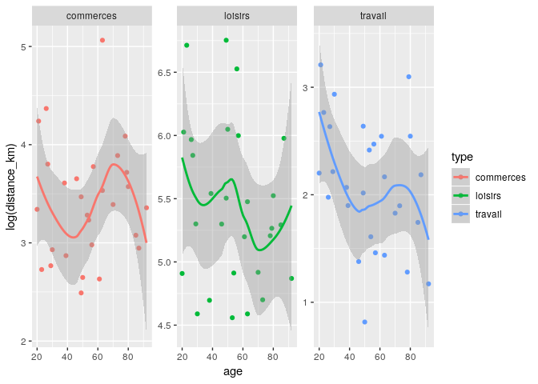

The goal of {fakir} is to provide fake datasets that can be used to teach R.
The full documentation is in this {pkgdown} site: https://thinkr-open.github.io/fakir/
Characteristics
This package is designed for teaching data wrangling and data visualisation:
- some datasets follow the tidy-data principles, others don’t.
- Some missing values are set for numeric and categorical variables
- Some variables values are correlated
These datasets are suitable to introduce to the {tidyverse} and to provide examples for main functions.
Supported languages are, for now, French and US English.
Examples
Fake support ticket base :
- All tickets
library(fakir)
fake_ticket_client(vol = 10)
#> # A tibble: 10 x 25
#> ref num_client first last job age region id_dpt departement
#> <chr> <chr> <chr> <chr> <chr> <dbl> <chr> <chr> <chr>
#> 1 DOSS… 79 Jovan O'Ke… Gene… 22 Île-d… 91 Essonne
#> 2 DOSS… 69 Miss Lean… Emer… 68 Pays … 44 Loire-Atla…
#> 3 DOSS… 120 Odell Stok… Engi… 24 <NA> 68 Haut-Rhin
#> 4 DOSS… 31 Loren Lars… <NA> NA Breta… 29 Finistère
#> 5 DOSS… 59 Mayb… Maye… Furt… 18 Bourg… 89 Yonne
#> 6 DOSS… 118 Jama… Ober… Engi… 18 Alsace 67 Bas-Rhin
#> 7 DOSS… 77 Lee Scha… Admi… NA Île-d… 77 Seine-et-M…
#> 8 DOSS… 65 Deme… Auer Cont… 21 Midi-… 32 Gers
#> 9 DOSS… 141 Wilf… Harv… Educ… 53 Limou… 87 Haute-Vien…
#> 10 DOSS… 182 Addy… Nien… Earl… 65 Midi-… 46 Lot
#> # … with 16 more variables: cb_provider <chr>, name <chr>,
#> # entry_date <dttm>, fidelity_points <dbl>, priority_encoded <dbl>,
#> # priority <fct>, timestamp <date>, year <dbl>, month <dbl>, day <int>,
#> # supported <chr>, supported_encoded <int>, type <chr>,
#> # type_encoded <int>, state <fct>, source_call <fct>- Separate tickets and client databases
tickets_db <- fake_ticket_client(vol = 100, split = TRUE)
tickets_db
#> $clients
#> # A tibble: 200 x 14
#> num_client first last job age region id_dpt departement cb_provider
#> * <chr> <chr> <chr> <chr> <dbl> <chr> <chr> <chr> <chr>
#> 1 1 Solo… Hean… Civi… 53 Pays … 72 <NA> Diners Clu…
#> 2 2 Karma Will… Scie… 81 Nord-… 62 Pas-de-Cal… VISA 13 di…
#> 3 3 Press Kulas Anim… NA Poito… 17 <NA> <NA>
#> 4 4 Laken McDe… <NA> NA Centre 36 Indre <NA>
#> 5 5 Sydn… Jask… Hort… 30 Prove… 13 Bouches-du… <NA>
#> 6 6 Clay… Runo… Comm… NA Midi-… 31 Haute-Garo… Diners Clu…
#> 7 7 Robe… Purd… Fina… 60 Aquit… 40 <NA> <NA>
#> 8 8 Dr. Rona… Astr… 30 Midi-… 46 Lot <NA>
#> 9 9 Miss Alon… Occu… 18 Champ… 08 Ardennes Diners Clu…
#> 10 10 Vern… Ondr… Clin… 19 Franc… 70 Haute-Saône <NA>
#> # … with 190 more rows, and 5 more variables: name <chr>,
#> # entry_date <dttm>, fidelity_points <dbl>, priority_encoded <dbl>,
#> # priority <fct>
#>
#> $tickets
#> # A tibble: 100 x 10
#> ref num_client year month day timestamp supported type state
#> <chr> <chr> <dbl> <dbl> <int> <date> <chr> <chr> <fct>
#> 1 DOSS… 1 2013 1 22 2013-01-22 Non Inst… Term…
#> 2 DOSS… 22 2016 11 14 2016-11-14 Non Inst… Atte…
#> 3 DOSS… 9 2016 12 19 2016-12-19 Non Inst… Term…
#> 4 DOSS… 8 2017 1 2 2017-01-02 Non Box Atte…
#> 5 DOSS… 30 2017 1 19 2017-01-19 Oui Inst… Inte…
#> 6 DOSS… 10 2017 2 1 2017-02-01 Oui Inst… Atte…
#> 7 DOSS… 37 2017 3 1 2017-03-01 Non Ligne Atte…
#> 8 DOSS… 37 2017 4 21 2017-04-21 Non Box Atte…
#> 9 DOSS… 24 2017 4 28 2017-04-28 Non <NA> En c…
#> 10 DOSS… 12 2017 5 15 2017-05-15 Non Inst… Atte…
#> # … with 90 more rows, and 1 more variable: source_call <fct>
ggplot(tickets_db$clients) +
aes(entry_date, fidelity_points) +
geom_point() +
geom_smooth()


Fake website visits
fake_visits(from = "2017-01-01", to = "2017-01-31")
#> # A tibble: 31 x 8
#> timestamp year month day home about blog contact
#> * <date> <dbl> <dbl> <int> <int> <int> <int> <int>
#> 1 2017-01-01 2017 1 1 369 220 404 210
#> 2 2017-01-02 2017 1 2 159 250 414 490
#> 3 2017-01-03 2017 1 3 436 170 498 456
#> 4 2017-01-04 2017 1 4 NA 258 526 392
#> 5 2017-01-05 2017 1 5 362 NA 407 291
#> 6 2017-01-06 2017 1 6 245 145 576 90
#> 7 2017-01-07 2017 1 7 NA NA 484 167
#> 8 2017-01-08 2017 1 8 461 103 441 NA
#> 9 2017-01-09 2017 1 9 337 113 673 379
#> 10 2017-01-10 2017 1 10 NA 169 308 139
#> # … with 21 more rowsFake questionnaire on mean of transport / goal
- All answers
fake_sondage_answers(n = 10)
#> # A tibble: 30 x 12
#> id_individu age sexe region id_departement nom_departement
#> <chr> <int> <chr> <chr> <chr> <chr>
#> 1 ID-NYDZ-010 NA <NA> Rhône… 69 <NA>
#> 2 ID-NYDZ-010 NA <NA> Rhône… 69 <NA>
#> 3 ID-NYDZ-010 NA <NA> Rhône… 69 <NA>
#> 4 ID-PWLB-009 71 F Aquit… 47 Lot-et-Garonne
#> 5 ID-PWLB-009 71 F Aquit… 47 Lot-et-Garonne
#> 6 ID-PWLB-009 71 F Aquit… 47 Lot-et-Garonne
#> 7 ID-NMQG-001 42 M Breta… 29 Finistère
#> 8 ID-NMQG-001 42 M Breta… 29 Finistère
#> 9 ID-NMQG-001 42 M Breta… 29 Finistère
#> 10 ID-RJXN-002 71 O Rhône… 42 Loire
#> # … with 20 more rows, and 6 more variables: question_date <dttm>,
#> # year <dbl>, type <chr>, distance_km <dbl>, transport <fct>,
#> # temps_trajet_en_heures <dbl>- Separate individuals and their answers
fake_sondage_answers(n = 10, split = TRUE)
#> $individus
#> # A tibble: 10 x 8
#> id_individu age sexe region id_departement nom_departement
#> <chr> <int> <chr> <chr> <chr> <chr>
#> 1 ID-NYDZ-010 NA <NA> Corse 2B <NA>
#> 2 ID-PWLB-009 71 F Bourg… 21 Côte-d'Or
#> 3 ID-NMQG-001 42 M Bourg… 71 Saône-et-Loire
#> 4 ID-RJXN-002 71 O Basse… 14 Calvados
#> 5 ID-MROK-007 41 M Poito… 79 Deux-Sèvres
#> 6 ID-VMKS-004 33 O Franc… 39 Jura
#> 7 ID-XEMZ-003 81 O Franc… 70 Haute-Saône
#> 8 ID-EUDQ-005 44 M <NA> 2A Corse-du-Sud
#> 9 ID-DCIZ-008 92 O Langu… 11 Aude
#> 10 ID-KPUS-006 57 O Langu… 30 Gard
#> # … with 2 more variables: question_date <dttm>, year <dbl>
#>
#> $answers
#> # A tibble: 30 x 5
#> id_individu type distance_km transport temps_trajet_en_heures
#> <chr> <chr> <dbl> <fct> <dbl>
#> 1 ID-NYDZ-010 travail 12.2 voiture 0.15
#> 2 ID-NYDZ-010 commerces 9.61 bus 1.01
#> 3 ID-NYDZ-010 loisirs 549. avion 0.27
#> 4 ID-PWLB-009 travail 11.9 voiture 0.14
#> 5 ID-PWLB-009 commerces 27.4 voiture 0.34
#> 6 ID-PWLB-009 loisirs 210. train 0.42
#> 7 ID-NMQG-001 travail 2.38 velo 0.43
#> 8 ID-NMQG-001 commerces 14.9 voiture 0.18
#> 9 ID-NMQG-001 loisirs 446. train 0.89
#> 10 ID-RJXN-002 travail 6.18 mobylette 0.75
#> # … with 20 more rowsfake transport use
answers <- fake_sondage_answers(n = 30)
answers
#> # A tibble: 90 x 12
#> id_individu age sexe region id_departement nom_departement
#> <chr> <int> <chr> <chr> <chr> <chr>
#> 1 ID-MROK-007 NA M Corse 2B Haute-Corse
#> 2 ID-MROK-007 NA M Corse 2B Haute-Corse
#> 3 ID-MROK-007 NA M Corse 2B Haute-Corse
#> 4 ID-NYDZ-010 49 M Rhône… 01 Ain
#> 5 ID-NYDZ-010 49 M Rhône… 01 Ain
#> 6 ID-NYDZ-010 49 M Rhône… 01 Ain
#> 7 ID-HXOG-015 50 M Aquit… 64 Pyrénées-Atlan…
#> 8 ID-HXOG-015 50 M Aquit… 64 Pyrénées-Atlan…
#> 9 ID-HXOG-015 50 M Aquit… 64 Pyrénées-Atlan…
#> 10 ID-MZNB-024 70 F Franc… 90 <NA>
#> # … with 80 more rows, and 6 more variables: question_date <dttm>,
#> # year <dbl>, type <chr>, distance_km <dbl>, transport <fct>,
#> # temps_trajet_en_heures <dbl>
ggplot(answers) + aes(age, log(distance_km), colour = type) + geom_point() +
geom_smooth() + facet_wrap(~type, scales = "free_y")
#> Warning: Removed 6 rows containing non-finite values (stat_smooth).
#> Warning: Removed 6 rows containing missing values (geom_point).
Prior work
This package is heavily inspired by {charlatan}.
Scott Chamberlain (2017). charlatan: Make Fake Data. R package version 0.1.0. https://CRAN.R-project.org/package=charlatan
Contribute
You can contribute to {fakir} in two ways:
COC
Please note that this project is released with a Contributor Code of Conduct. By participating in this project you agree to abide by its terms.